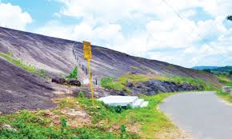

Athirappilly Waterfall
Athirappilly Falls, is situated in Athirappilly Panchayat, Chalakudy Taluk, Thrissur District of Kerala, India on the Chalakudy River, which originates from the upper reaches of the Western Ghats at the entrance to the Sholayar ranges.It is the largest waterfall in Kerala, which stands tall at 80 feet. Just a short drive from Athirapally to the Vazhachal falls, which is close to dense green forests that are home to many endangered and endemic species of flora and fauna.

Sakthan Palace
Shakthan Thampuran Palace is situated in City of Thrissur in Kerala state, India. It is named as Vadakkekara Palace, was reconstructed in Kerala-Dutch style in 1795 by Ramavarma Thampuran of the erstwhile Princely State of Cochin, well as Sakthan Thampuran (Greatest ruler of the Cochin dynasty) is preserved by Archaeological Department. The palace was converted into a museum in 2005 by State.he main structure of the Sakthan Thampuran Palace has a two-storeyed building and a traditional Kerala style Nalukettu.

Bible Tower Thrissur
Famous for being the tallest church tower in Asia, the Bible Tower in Thrissur, was inaugurated in 2007 dedicated to world peace. It is visible from any part of Thrissur town and stands tall at 260 feet. It contains artwork by some of the most famous artists of India. The tower has a gallery containing beautiful paintings depicting the infancy, the passion and the resurrection of Jesus Christ. It is a must-see attraction for art lovers and for people interested in the life of Jesus Christ. It even has a facility that provides a breath-taking view of Thrissur from top.

State Museum and Zoo Thrissur
Thrissur Zoo or State Museum & Zoo, Thrissur is a 13.5-acre zoo that opened in 1885 in a small area called Chembukkavu, in the heart of Thrissur City, Kerala, India. It is one of the oldest zoos in the country, and is home to a wide variety of animals, reptiles, and birds. The zoo compound includes a natural history museum and an art museum that showcase the social and cultural heritage of the region. The Thrissur Zoo is 2 kilometres from the Thrissur City center and is open from 10:00 AM till 5:15 PM, except on Mondays. Being one of the two Zoological Parks in the state of Kerala, it sees many visitors on a regular basis

Our Lady of Dolours Basilica
Our Lady of Dolours Basilica alias Puthenpally is a minor basilica of the Syro-Malabar Catholic Church in Thrissur City in Kerala, India. The third tallest church in Asia, it is famous for its Gothic style architecture. Built in fine Indo-Gothic style with an area of 25,000 square feet, it has soaring belfries at the entrance, double-storeyed aisles all along the nave and transepts, and eleven altars, five on either side of the main one. It is the largest church in Kerala and its exuberant interior decorations include fine specimens of murals, idols of saints, and scenes from the Scriptures.

Thrissur Pooram
Thrissur Pooram was the brainchild of Rama Varma Kunhjippilla Thampuran, or Rama Varma IX, famously known as Sakthan Thampuran, the Maharaja of Cochin (1790–1805). Before the start of Thrissur Pooram, the largest temple festival in Kerala was the one-day festival held at Aarattupuzha known as Arattupuzha Pooram. Temples in and around the city of Thrissur were regular participants. In the year 1798 because of incessant rains, the temples with from Thrissur were late for the Arattupuzha Pooram and were denied access to the Pooram procession. Feeling embarrassed and angered by the denial, the temple authorities raised the issue with Sakthan Thampuran.

Elephant Sanctuary
Over forty elephants are groomed at the Punnathoor Kotta. Many elephants are brought as ritual offering to the temple. You can spend a whole day with these huge mammals here.Watching the naughty baby elephants' playful antics is an entertaining experience. The place provides you an opportunity to watch how the sick elephants are medically treated in the traditional manner. One can also watch the training given to the elephants for various ritualistic performances.

Cheppaara
The view of sunset from atop the rock, which is spread across an area of one km, is breath-taking, and trekkers can also enjoy a bird’s eye view of Wadakkanchery and Thrissur towns. Due to the lack of crowd at any given time, explorers can enjoy the panoramic view from the hilltop in calmness. To watch the sunset from Cheppara amid strong winds is an unparalleled encounter with Nature.There are ancient-era dolmens, where sages are believed to have meditated, on the hills. Fencing has been laid around these caves to preserve the historical treasures.

Poomala Dam Park
The best part of Poomala dam is that it isn’t too crowded and provides the perfect peaceful weekend getaway for those living in Thrissur or visiting Thrissur. From on top of the hill, you can catch breath-taking glimpses of Thrissur city spread out below, open to a bird’s eye view.It was in 1939 that a dividing weir was built in the Poomala valley and in 1968, it was commissioned as the Poomala reservoir. The dam so created is comparatively small and is mainly used for irrigation purposes aside from tourism. It is located in Mulankunnathukavu Panchayat area under Thrissur district in Kerala.